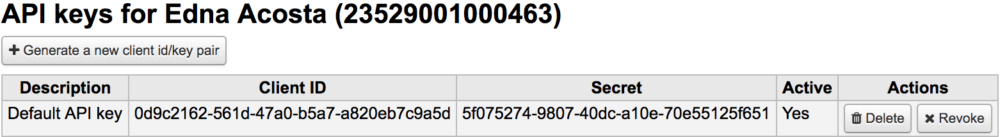

Web Services
Koha provides a number of APIs allowing access to it’s data and functions.
OAI-PMH
For the Open Archives Initiative-Protocol for Metadata Harvesting (OAI-PMH) there are two groups of ‘participants’: Data Providers and Service Providers. Data Providers (open archives, repositories) provide free access to metadata, and may, but do not necessarily, offer free access to full texts or other resources. OAI-PMH provides an easy to implement, low barrier solution for Data Providers. Service Providers use the OAI interfaces of the Data Providers to harvest and store metadata. Note that this means that there are no live search requests to the Data Providers; rather, services are based on the harvested data via OAI-PMH.
Koha at present can only act as a Data Provider. It can not harvest from other repositories. The biggest stumbling block to having Koha harvest from other repositories is that MARC is the only metadata format that Koha indexes natively. Visit http://www.oaforum.org/tutorial/english/page3.htm for diagrams of how OAI-PMH works.
By default Koha won’t include item information in OAI-PMH result sets, but they can be added by using the include_items option in the a configuration file linked from OAI-PMH:ConfFile.
Learn more about OAI-PMH at: http://www.openarchives.org/pmh/
To enable OAI-PMH in Koha edit the OAI-PMH preference. Once enabled you can visit http://YOURKOHACATALOG/cgi-bin/koha/oai.pl to see your file.
Sample OAI Conf File
format:
vs:
metadataPrefix: vs
metadataNamespace: http://veryspecial.tamil.fr/vs/format-pivot/1.1/vs
schema: http://veryspecial.tamil.fr/vs/format-pivot/1.1/vs.xsd
xsl_file: /usr/local/koha/xslt/vs.xsl
marcxml:
metadataPrefix: marxml
metadataNamespace: http://www.loc.gov/MARC21/slim http://www.loc.gov/standards/marcxml/schema/MARC21slim
schema: http://www.loc.gov/MARC21/slim http://www.loc.gov/standards/marcxml/schema/MARC21slim.xsd
include_items: 1
oai_dc:
metadataPrefix: oai_dc
metadataNamespace: http://www.openarchives.org/OAI/2.0/oai_dc/
schema: http://www.openarchives.org/OAI/2.0/oai_dc.xsd
xsl_file: /usr/local/koha/koha-tmpl/intranet-tmpl/xslt/UNIMARCslim2OAIDC.xsl
SRU server
Koha implements the Search/Retrieve via URL (SRU) protocol. More information about the protocol itself can be found at http://www.loc.gov/standards/sru/. The version implemented is version 1.1.
Explain
If you want to have information about the implementation of SRU on a given server, you should have access to the Explain file using a request to the server without any parameter. Like http://myserver.com:9999/biblios/. The response from the server is an XML file that should look like the following and will give you information about the default settings of the SRU server.
<zs:explainResponse>
<zs:version>1.1</zs:version>
<zs:record>
<zs:recordSchema>http://explain.z3950.org/dtd/2.0/</zs:recordSchema>
<zs:recordPacking>xml</zs:recordPacking>
<zs:recordData>
<explain xml:base="zebradb/explain-biblios.xml">
<!--
try stylesheet url: http://./?stylesheet=docpath/sru2.xsl
-->
<serverInfo protocol="SRW/SRU/Z39.50">
<host>biblibre</host>
<port>9999</port>
<database>biblios</database>
</serverInfo>
<databaseInfo>
<title lang="en" primary="true">Koha 3 Bibliographic SRU/SRW/Z39.50 server</title>
<description lang="en" primary="true">Koha 3 Bibliographic Server</description>
<links>
<sru>http://biblibre:9999</sru>
</links>
</databaseInfo>
<indexInfo>
<set name="cql" identifier="info:srw/cql-context-set/1/cql-v1.1">
<title>CQL Standard Set</title>
</set>
<index search="true" scan="true" sort="false">
<title lang="en">CQL Server Choice</title>
<map>
<name set="cql">serverChoice</name>
</map>
<map>
<attr type="1" set="bib1">text</attr>
</map>
</index>
<index search="true" scan="true" sort="false">
<title lang="en">CQL All</title>
<map>
<name set="cql">all</name>
</map>
<map>
<attr type="1" set="bib1">text</attr>
</map>
</index>
<!-- Record ID index -->
<index search="true" scan="true" sort="false">
<title lang="en">Record ID</title>
<map>
<name set="rec">id</name>
</map>
<map>
<attr type="1" set="bib1">rec:id</attr>
<attr type="4" set="bib1">3</attr>
</map>
</index>
Search
This url : http://myserver.com:9999/biblios?version=1.1&operation=searchRetrieve&query=reefs is composed of the following elements:
base url of the SRU server : http://myserver.com:9999/biblios?
search part with the 3 required parameters : version, operation and query. The parameters within the search part should be of the key=value form, and can be combined with the & character.
One can add optional parameters to the query, for instance maximumRecords indicating the maximum number of records to be returned by the server. So http://myserver.com:9999/biblios?version=1.1&operation=searchRetrieve&query=reefs&maximumRecords=5 will only get the first 5 results results from the server.
http://www.loc.gov/standards/sru/sru1-1archive/search-retrieve-operation.html gives more details about the search operations and in particular the list of optional parameters for searching.
The “operation” key can take two values: scan or searchRetrieve.
If operation=searchRetrieve, then the search key should be query. As in : operation=searchRetrieve&query=reefs
If operation=scan, then the search key should be scanClause. As in : operation=scan&scanClause=reefs
etc/zebradb/biblios/etc/bib1.att defines Zebra/3950 indexes that exist on your system. For instance you’ll see that we have indexes for Subject and for Title: att 21 Subject and att 4 Title respectively.
In the pqf.properties file located under etc/zebradb/pqf.properties I see that an access point already uses my Subject index (index.dc.subject = 1=21) while another uses my Title index (index.dc.title = 1=4) I know this is my Subject index because as I’ve seen just before in my bib1.att file, it’s called with =1=21 in Z3950: so index.dc.subject = 1=21 correctly points to my Subject index. And Title was called with 1=4 so index.dc.title = 1=4 correctly points to my Title index. I can now construct my query just like I would in a search box, just preceding it with the “query” key: query=Subject=reefs and Title=coral searches “reefs” in the subject and “coral” in the title. The full url would be http://myserver.com:9999/biblios?version=1.1&operation=searchRetrieve&query=Subject=reefs and Title=coral If I want to limit the result set to just 5 records, I can do http://myserver.com:9999/biblios?version=1.1&operation=searchRetrieve&query=Subject=reefs and Title=coral&maximumRecords=5
I can also play with truncate, relations, etc. Those are also defined in my pqf.properties file. I can see for instance the position properties defined as:
position.first = 3=1 6=1
# "first in field"
position.any = 3=3 6=1
# "any position in field"
So as an example if I want “coral” to be at the beginning of the title, I can do this query : http://myserver.com:9999/biblios?version=1.1&operation=searchRetrieve&query=Title=coral first
Retrieve
My search for http://univ_lyon3.biblibre.com:9999/biblios?version=1.1&operation=searchRetrieve&query=coral reefs&maximumRecords=1 retrieves just on record. The response looks like this:
<zs:searchRetrieveResponse>
<zs:version>1.1</zs:version>
<zs:numberOfRecords>1</zs:numberOfRecords>
<zs:records>
<zs:record>
<zs:recordPacking>xml</zs:recordPacking>
<zs:recordData>
<record xsi:schemaLocation="http://www.loc.gov/MARC21/slim http://www.loc.gov/ standards/marcxml/schema/MARC21slim.xsd">
<leader> cam a22 4500</leader>
<datafield tag="010" ind1=" " ind2=" ">
<subfield code="a">2-603-01193-6</subfield>
<subfield code="b">rel.</subfield>
<subfield code="d">159 F</subfield>
</datafield>
<datafield tag="020" ind1=" " ind2=" ">
<subfield code="a">FR</subfield>
<subfield code="b">00065351</subfield>
</datafield>
<datafield tag="101" ind1="1" ind2=" ">
<subfield code="c">ita</subfield>
</datafield>
<datafield tag="105" ind1=" " ind2=" ">
<subfield code="a">a z 00|y|</subfield>
</datafield>
<datafield tag="106" ind1=" " ind2=" ">
<subfield code="a">r</subfield>
</datafield>
<datafield tag="100" ind1=" " ind2=" ">
<subfield code="a">20091130 frey50 </subfield>
</datafield>
<datafield tag="200" ind1="1" ind2=" ">
<subfield code="a">Guide des récifs coralliens / A Guide to Coral Reefs</subfield>
<subfield code="b">Texte imprimé</subfield>
<subfield code="e">la faune sous-marine des coraux</subfield>
<subfield code="f">A. et A. Ferrari</subfield>
</datafield>
<datafield tag="210" ind1=" " ind2=" ">
<subfield code="a">Lausanne</subfield>
<subfield code="a">Paris</subfield>
<subfield code="c">Delachaux et Niestlé</subfield>
<subfield code="d">cop. 2000</subfield>
<subfield code="e">impr. en Espagne</subfield>
</datafield>
<datafield tag="215" ind1=" " ind2=" ">
<subfield code="a">287 p.</subfield>
<subfield code="c">ill. en coul., couv. ill. en coul.</subfield>
<subfield code="d">20 cm</subfield>
</datafield>
......
<idzebra>
<size>4725</size>
<localnumber>2</localnumber>
<filename>/tmp/nw10BJv9Pk/upd_biblio/exported_records</filename>
</idzebra>
</record>
</zs:recordData>
<zs:recordPosition>1</zs:recordPosition>
</zs:record>
</zs:records>
</zs:searchRetrieveResponse>
ILS-DI
As of writing, the self documenting ILS-DI is the most complete interface and after it has been enabled as described in the ILS-DI system preferences section the documentation should be available at https://YOURKOHACATALOG/cgi-bin/koha/ilsdi.pl
JSON reports services
Koha implements a JSON reports service for every report saved using the Guided Reports Wizard or Report from SQL features.
By default reports will be non-public and only accessible by authenticated users. If a report is explicitly set to public it will be accessible without authentication by anyone. This feature should only be used when the data can be shared safely not containing any patron information.
The reports can be accessed using the following URLs:
Public reports
OpacBaseURL/cgi-bin/koha/svc/report?id=REPORTID
Non-public reports
StaffBaseURL/cgi-bin/koha/svc/report?id=REPORTID
There are also some additional parameters available:
Instead of accessing the report by REPORTID you can also use the report’s name:
…/cgi-bin/koha/svc/report?name=REPORTNAME
For easier development there is also an option to generate an annotated output of the data. It will generate an array of hashes that include the field names as keys.
…/cgi-bin/koha/svc/report?name=REPORTNAME&annotated=1
Versioned RESTful API Effort
There is an ongoing effort to converge the APIs above into a single versioned set of modern RESTful endpoints documented using the OpenAPI standard and available by default under https://YOURKOHACATALOG/api/v1/
OAuth2 client credentials grant
Koha supports the OAuth2 client credentials grant as a means to secure the API for using it from other systems to adhere to current industry standards. More information on the OAuth2 client credentials grant standard can be found here.
API key management interface for patrons
In order for API keys to be create for patrons, the system preference RESTOAuth2ClientCredentials must be enabled for the option to appear in a patron record.
Navigate to a patron record and select More > Manage API keys
If no API keys exist for a patron there will be a message prompting to generate a client id/secret pair

Enter a description for the client id/secret pair and click Save

Koha will generate a client id/secret pair for use to connect to Koha from other third-party systems as an authenticated client

Clicking the Revoke button next to an API credential pair will render the specific credential pair inactive until reactivated
Barcode image generator
Koha provides a barcode image generator on both the staff interface and the public interface. Both require a user to be logged in to use the service, to prevent abuse by third parties.
- For example::
/cgi-bin/koha/svc/barcode?barcode=123456789&type=UPCE
The URL above will generate a barcode image for the barcode “123456789”, using the UPCE barcode format.
The available barcode types are: * Code39 * UPCE * UPCA * QRcode * NW7 * Matrix2of5 * ITF * Industrial2of5 * IATA2of5 * EAN8 * EAN13 * COOP2of5
If no type is specified, Code39 will be used.
By default, the barcode image will contain the text of the barcode as well. If this is not desired, the parameter “notext” may be passed to supress this behavior.
For example:
/cgi-bin/koha/svc/barcode?barcode=123456789¬ext=1
will generate a barcode image 123456789 without the text “123456789” below it.
This service can be used to embed barcode images into slips and notices printed from the browser, and to embed a patron cardnumber into the OPAC, among other possibilities.